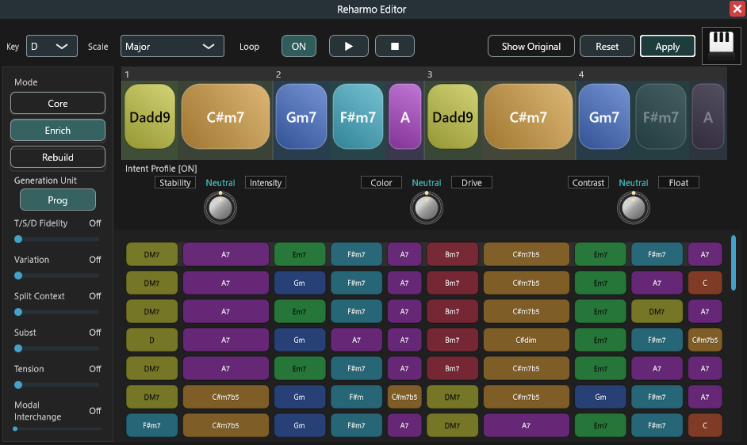
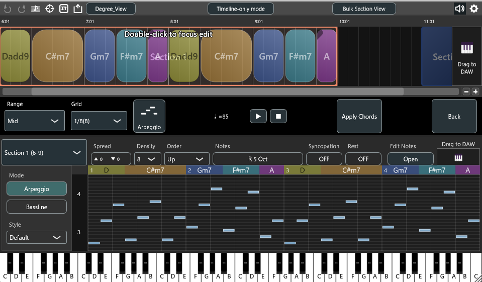
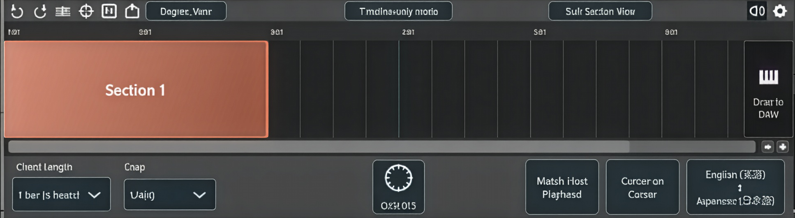
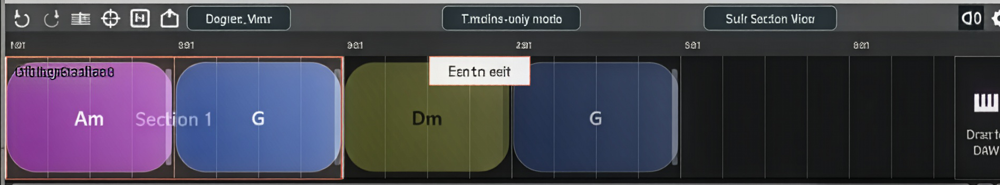

機能解説

タイムライン編集で素早く下書き
ドラッグ/移動/リサイズで直感的に進行を構築。スナップ/小節グリッドで整列し、移調や転回もすぐに反映できます。編集→試聴→MIDIドラッグの短いループで、アイデアを素早く形に。
リハーモナイズで候補を比較してから適用
v1.5 の大きな軸がリハーモナイズです。候補を比較し、元の進行を残したままプレビューし、必要なタイミングでだけ Apply できます。Chord Unit / Progression Unit の切り替えにも対応します。


アルペジオ / ベースラインをそのまま DAW へ
選択セクションから生成ノートを作成し、その場でプレビュー。必要に応じてノート編集ウィンドウで調整し、最終的には MIDI として DAW へドラッグできます。
セクション機能（Section Clip）
Verse/Chorus など曲の区間を、色付きクリップとしてまとめられます。移動・複製は中身のコードも一緒に追従。ダブルクリックでその区間だけに集中して編集できます。


フォーカス編集モードで安全に編集
セクションをダブルクリックすると、その区間だけを編集できる Focus Edit Mode に入ります。範囲外はグレーアウトして誤操作を防止。Esc（または Exit）でいつでも通常表示に戻せます。